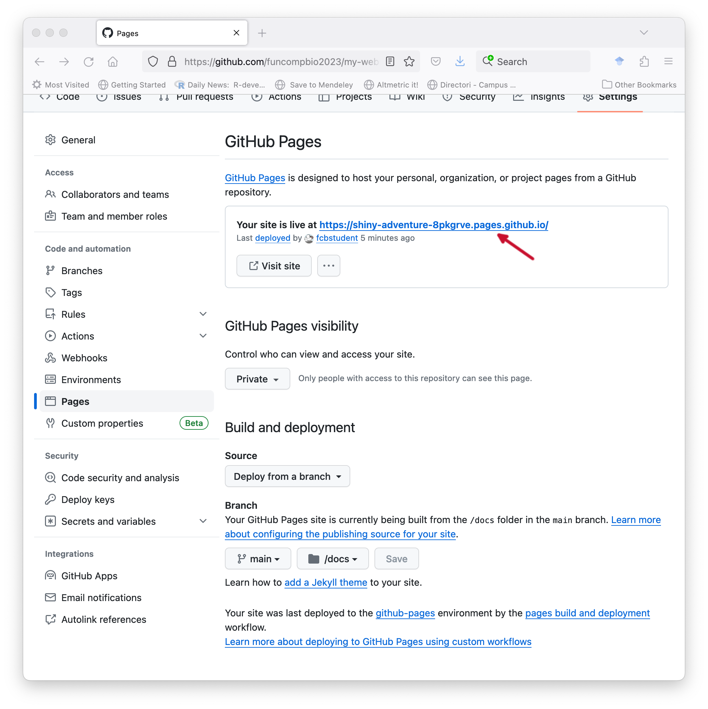
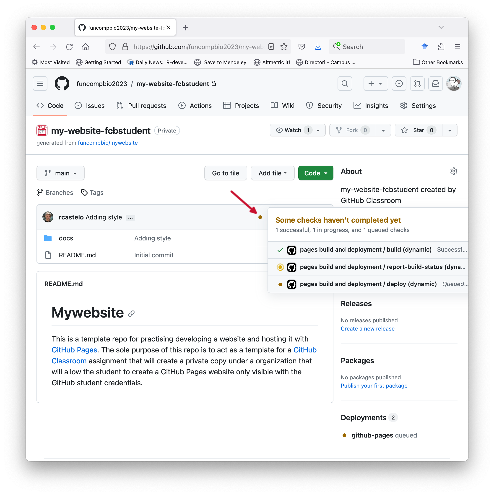

Objectives
The learning objectives for this practical are:
- Create HTML documents.
- Publish your website with GitHub Pages.
- Create Markdown documents.
Setup and background
To do this practical you only need text editor an a web browser. Make a new directory called practical9 and store there the files generated during this practical.
HTML documents
The basic skeleton for an HTML document consists of:
A DOCTYPE element that tells the web browser this is an HTML document:
<!DOCTYPE html>
A head element, which contains metadata, enclosed in other HTML elements, about the whole document such as a title that is displayed in the browser tab displaying the HTML document. Another common metadata to be included here is the one associated with the <style> element.
<head>
<title>Page Title</title>
</head>
A body element with the main content of the HTML document, which in this case consists of a heading and a paragraph.
<body>
<h1>This is a first-level heading</h1>
<p>This is a paragraph.</p>
</body>
The elements in parts 2 and 3 of the skeleton are enclosed by starting <html> and ending </html> elements. The whole skeleton together looks as follows:
Using a text editor, copy and paste the previous code into a text file called index.html, and open it with the web browser (File -> Open File ...).
The basic HTML elements are:
Exercise: Using some of these elements, edit the file index.html and modify it to make a web page about your favorite (or unbeloved) music band. The page should include two sections, one with the origins of the band and its members, and another with its discography (shorten it to the most relevant one if it is too long). Add a picture of the band and a link to their official web page (if they don’t have one, then link to some other website that talks about them). Try to keep it under 30 lines. To display in the web browser the changes you make you need to (1) save the file in your text editor and (2) press the reload button in the tab from web browser where you loaded the page.
Styling with CSS
You can alter the style of HTML elements using so-called CSS declarations. There are different ways to include them, one of them is through the <style> element in the <head> section of the HTML document. For instance, edit your index.html file and add the following CSS declaration within the <head> section:
<style>
h1 {
font-family: arial;
}
</style>
Now reload the page and you should see how the text associated with the first-level heading <h1> elements has changed its font. Consult the following link and change in the file index.html the default black color of the first-level heading <h1> element into another one.
Publish your website with GitHub Pages
GitHub offers a free web hosting service called GitHub Pages with some restrictions and usage limits such as a maximum disk usage of 1 Gb. While those limits may be too tight for websites with high-resolution images and videos, they are large enough for text content with low resolution images and graphics, such as those produced in the context of data analysis projects.
Here we are going to learn how to publish a website with GitHub pages, but using a private repo created through an assignment from GitHub Classroom, which will make the website only visible after logging into GitHub with our credentials. Please follow these three steps to create the GitHub repo that we will use to publish your website:
- Log into your GitHub account.
- Go to the Moodle site of FCB and click on the link called Website GitHub Classroom assignment link and accept the assignment. This will create a private repo with an URL of the form
https://github.com/FBC-XXXX/my-website-YYYY where XXXX is the year edition of the FCB course and YYYY is your GitHub username.
- Clone this GitHub repo on your local disk. This step will create a directory called
my-website-YYYY where YYYY is your GitHub username. Enter in this directory with the Unix cd command.
Now let’s put the website content in the right place of our repo, as follows:
- Within the directory of your
my-website-YYYY repo, create another directory called docs.
- Copy in this directory called
docs the file index.html you created before and any associated image files.
- From the root of your
my-website-YYYY repo, stage, commit and push these changes to the remote GiHub repo.
GitHub will look up the contents of your website from a so-called publishing source which can be either the root of your repo or a directory called docs in any branch including the default main branch. In certain settings, the publishing source is the root of a branch called gh-pages. In this practical, we will set as publishing source the docs directory of the main branch as follows.
Click on the Settings tab of your repo.

Click on the Pages menu option on the left panel under Code and automation.

In the section Build and deployment, under the subsection Branch, click on the pull-down menu that by default says None and select the main branch.

Click on the pull-down menu that says /(root) and select /docs, then click on the Save button.

The GitHub Pages settings panel will refresh automatically and at the top you should see the message GitHub Pages source saved. You should refresh the page through the reload button of the browser until you see a new message at the top that says Your site is live at followed by an URL. That’s the URL of your website, open it up in a new tab of your web browser.

If there is any error in the website code, or the publishing source (branch and directory) is wrongly specified or not filled with content, GitHub will not show you the URL.
Each time that you push changes in the docs directory to the remote GitHub repo, GitHub will have to rebuild and publish your website, which may take a few minutes. You can see how GitHub is building your webiste by going to the the page of your GitHub repo at https://github.com/FCB-XXXX/my-website-YYYY and clicking on the orange dot and then in the Details links from the pop-up menu.

When that build is finished, you have to go to your website URL and press the reload button in your browser to see your website updated.
GitHub Pages offers the possibility to have an URL associated with your GitHub account https://YYYY.github.io, where YYYY is your GitHub username and have a public website published under that URL. The steps to build that website are essentially the same as the previous ones with the addition that the repo hosting the publishing source of the website should be public and called YYYY.github.io. A very well paced guide to create such a public website with GitHub Pages is the one by Jonathan McGlone and the GitHub Learning Lab has also very good interative course. Another even easier option to publish HTML files under a public URL is Netlify Drop, which can be handy if you need to quickly share a website.
Markdown
We will learn Markdown as follows. In one tab of your browser open the CommonMark reference page. In another tab follow the 10-minute CommonMark tutorial.
Once you are finished with the tutorial, create a Markdown version of your previous file index.html, i.e., a index.md file, with all the previous content but formatted using Markdown only. Store that index.md file in the docs directory of the GitHub repo you created in the previous section. Rename the file index.html to old_index.html. Stage, commit and push these changes to the remote GitHub repo. Checkout after a few minutes that the website has been updated.